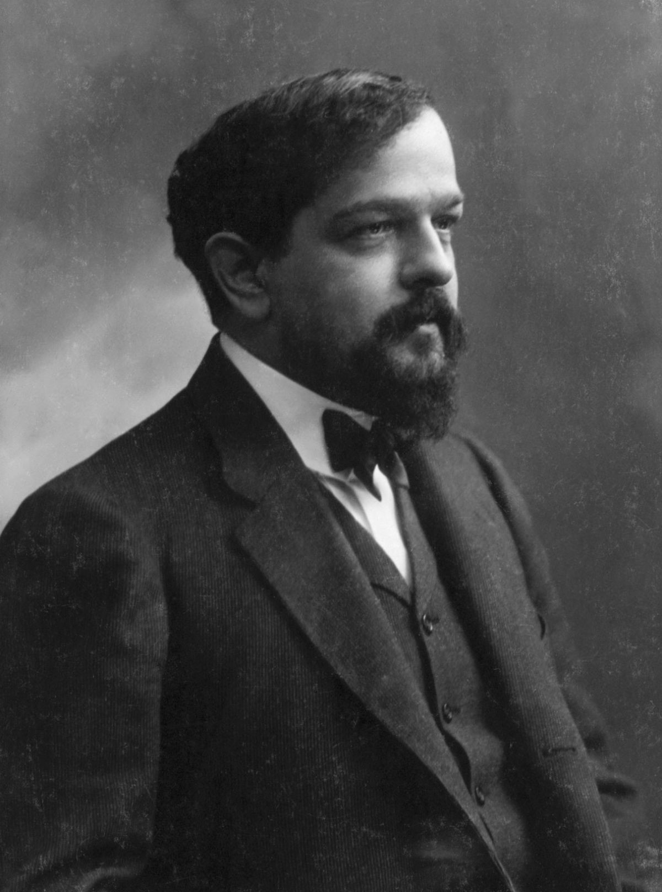

Home
Classical Piano Composers
Welcome to my website! Here, you will find information about three of my favorite classical piano composers. These composers have made several brilliant compositions that inspire me to play piano, and I hope they inspire you too!
Frédéric Chopin
Franz Liszt

Claude Debussy